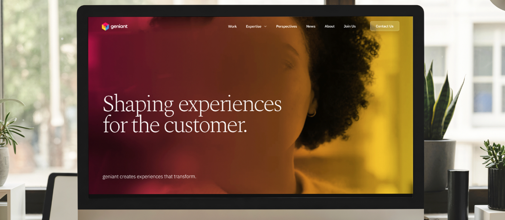
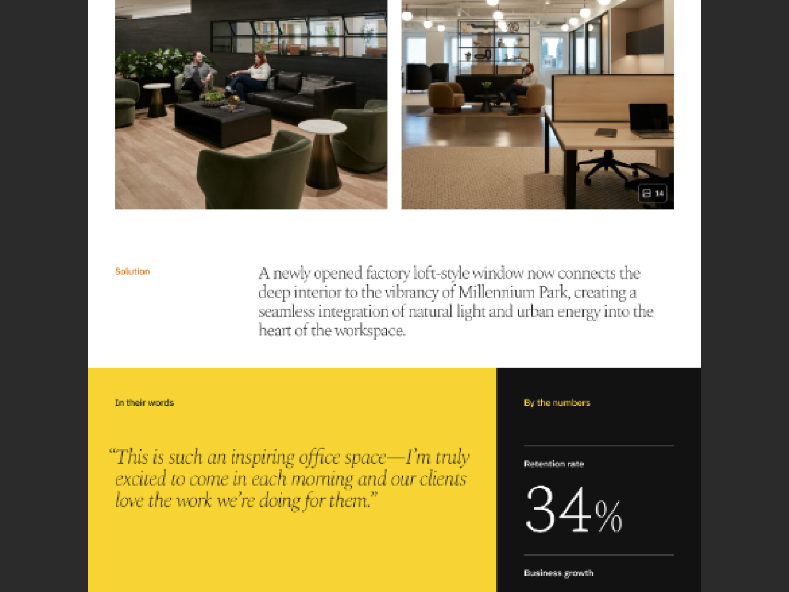
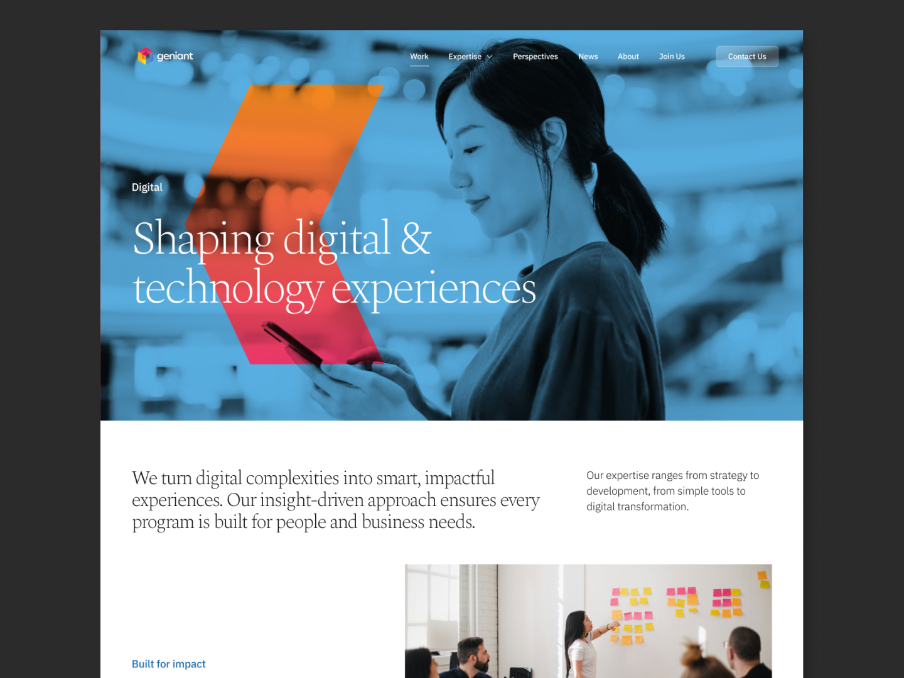

geniant.com
Led the redesign of geniant.com—from early concepts through development-ready handoff—creating a cohesive, flexible website that accurately represented a unique multi-discipline studio for the first time.

The original site didn’t reflect the depth or quality of a studio that spanned digital, architecture, and an emerging people design practice—a rare combination that most buyers didn’t fully understand. The site needed to tell that high-level experience story while representing the deep expertise of each core discipline.


I led UX and visual design, collaborated with engineers on implementation, and worked closely with studio leaders across the company to align on a shared direction.